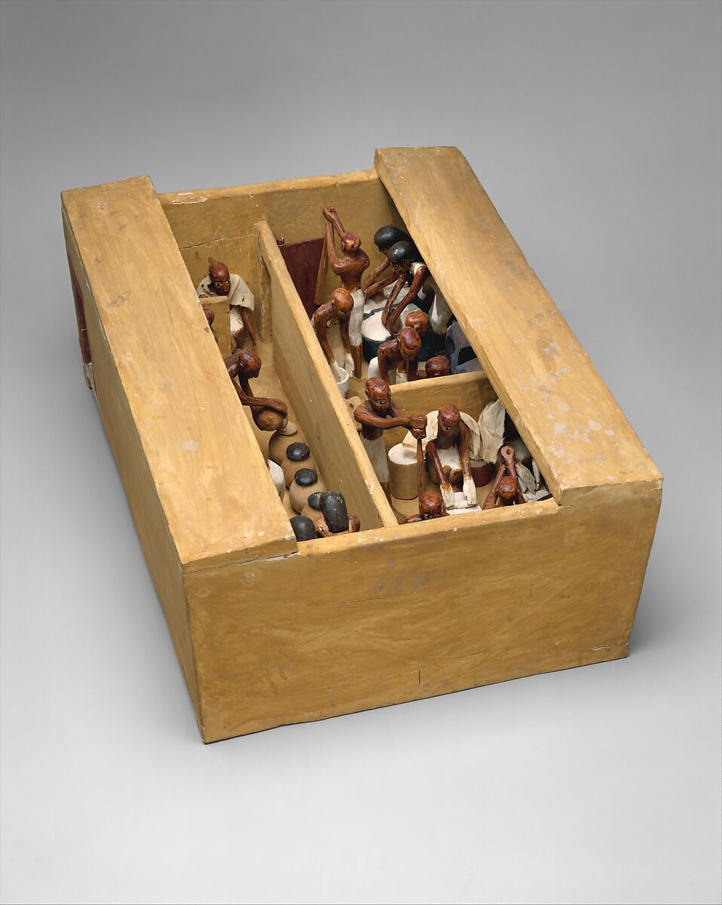

EGYPT · OBJECT JOURNEYS · STOP 02
A world
in miniature.
Small figures.
A window into working lives.
Look closely at a model made for Meketre’s tomb. Then step into an imagined, life-size scene of the activities it represents.
Circa 1980 BCE · Middle Kingdom · No sound
← Return to Nefertiti
THEBES · CIRCA 1980 BCE
Made for a tomb.
Inspired by life.
This little world was not a toy.
The model was discovered in a hidden chamber in Meketre’s tomb. He was a high-ranking royal steward.
Our next scene expands its miniature activities to human scale. It imagines a working bakery and brewery—not the tomb itself, or a documented building.
THEBES · A SCENE INSPIRED BY THE MODEL
Bread, beer & daily work.
Explore the activities. Return to the model to compare.
AI-created interpretation · Workers, building and placement are imagined.